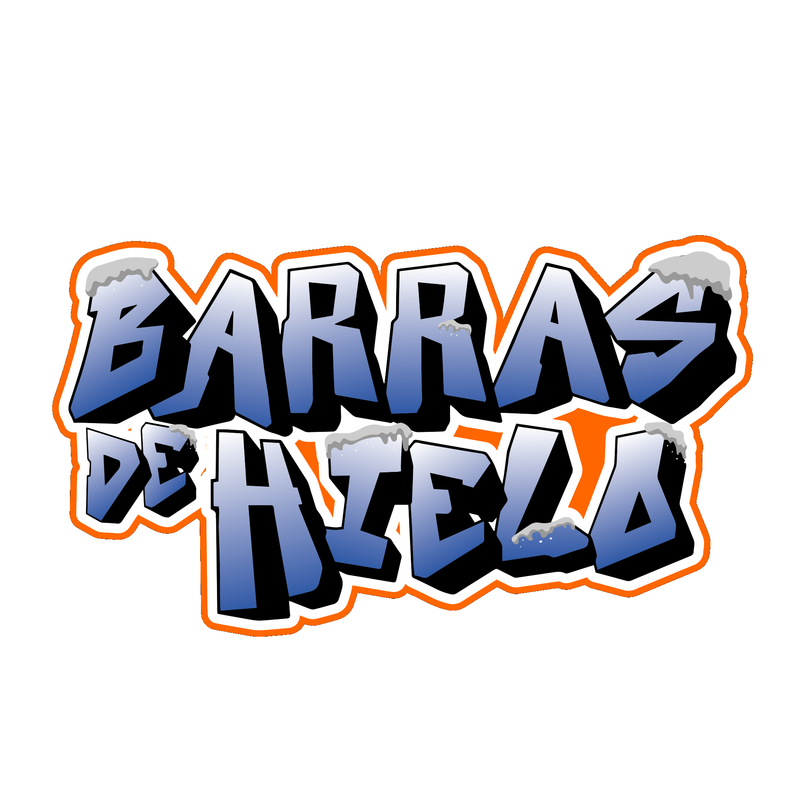
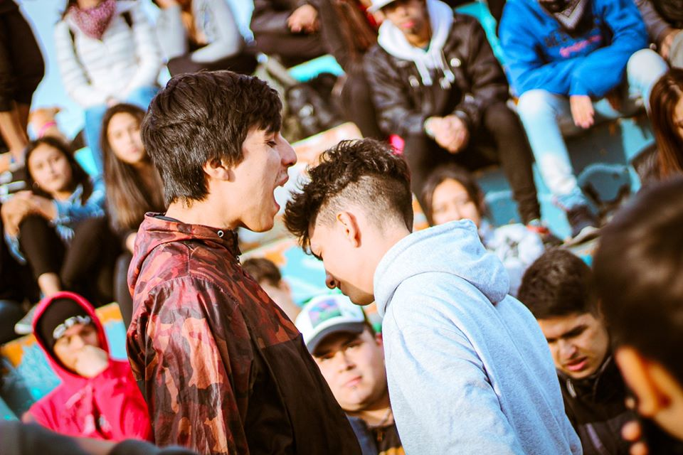

NUESTROS LOGROS

- Levantamos anímica y simbólicamente un lugar que estaba abandonado por la juventud, que es el “Skate Park Viejo”, históricamente al día de hoy el lugar oficial de la competencia.
- A partir del año 2016, realizamos dos torneos por año
- En menos de un año de la competencia, el 6 de noviembre del 2016 nos propusimos en realizar nuestra primera fecha especial que a costa de solo nosotros, pudimos tener la presencia de Alejo e Iacho, que en ese momento Alejo era el organizador del “Quinto Escalon”, la competencia históricamente más grande de plazas e Iacho era el beatboxer oficial de la misma. Nuestras fechas no superaban las 30 personas de público y los 16 competidores, pero ese día hubo más de 40 inscriptos y más de 300 personas asistieron a nuestra competencia.

- El 5 de Febrero del 2017 realizamos nuestra segunda fecha especial trayendo nuevamente a dos eminencias del rap en ese momento, “MKS y Klan”. Donde volvimos a romper record de público y de competidores, donde se inscribieron más de 60 competidores y asistieron alrededor de 500 personas al evento
- Sin quedarnos atrás, el 4 de Abril del 2017 llevamos a cabo nuestra tercera fecha trayendo a un exponente Internacional, “Sony”. Quedándonos cortos con el anfiteatro en donde realizamos todas nuestras fechas, tuvimos que realizar la competencia atrás del mismo debido a que concurrieron más de mil personas. La fecha se tuvo que cancelar debido a condiciones climáticas y la trasladamos para el 29 de Abril cubriendo todos los gastos nuevamente.
- El 1 de Julio del 2017 realizamos nuestra cuarta fecha especial trasladándonos al nuevo Skatepark debido a que la banda “La Cofradia” y “KMD” brindaban un show el mismo día de la competencia.
- El 21 de Julio del 2017 recibimos como competencia un reconocimiento cultural gracias a Paulino Rossi.

- El 6 de Agosto del 2017 realizamos nuestra quinta fecha especial con la participación de Lit Killah y Paulo Londra que hoy en día son exponentes de trap argentino.
- El 17 de Septiembre del 2017 realizamos nuestra sexta fecha especial teniendo la oportunidad de tener la presencia de Agustin Cruz, mejor conocido como Acru. Uno de los mayores exponentes del HipHop argentino brindo un show y fue competidor en nuestra competencia.
- El 18 de Septiembre en la escuela “Polivalente de Arte” dimos nuestra primera clase de hiphop brindando información histórica del mismo y enseñando a improvisar con la presencia de raperos de nuestra competencia.
- El 5 de Octubre dejamos más que una huella simbólica en el SkatePark viejo y gracias a la ayuda de Diego Lasalle pudimos dejar nuestra marca pintando todo el Barras que hasta el día de hoy lo hemos retocado en reiteradas veces, pero sigue intacto.